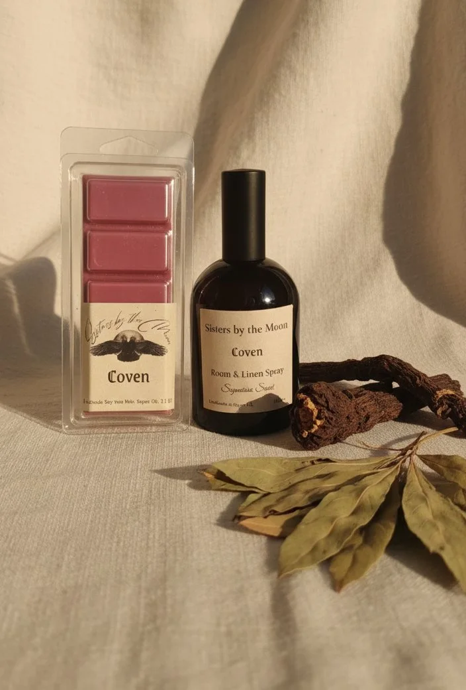
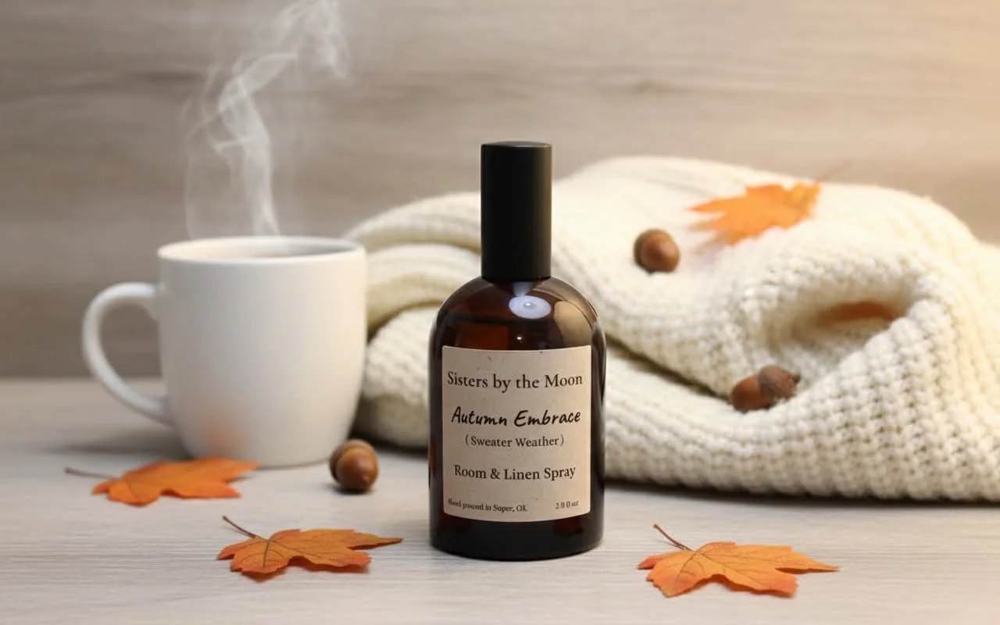
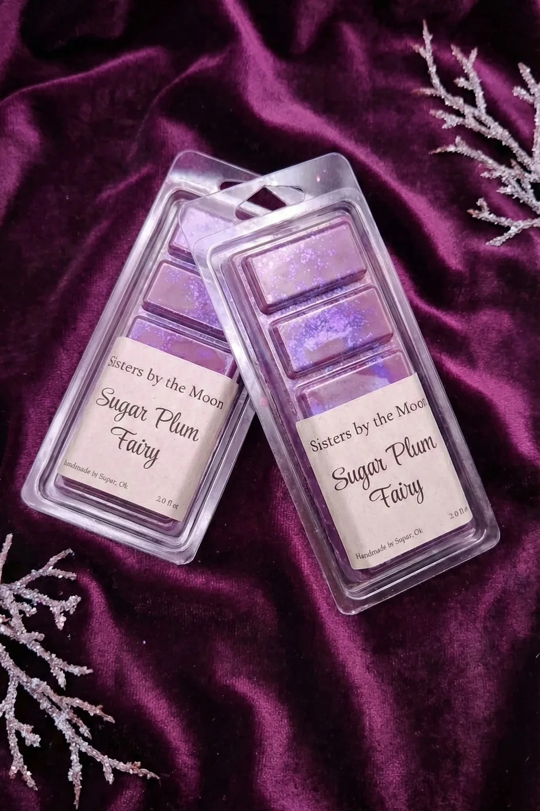
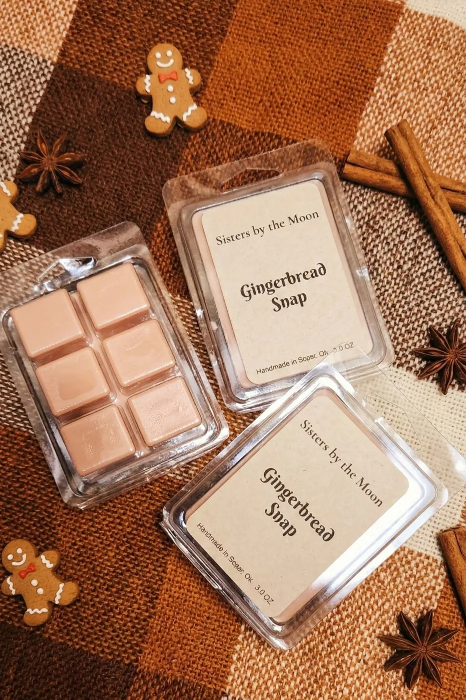
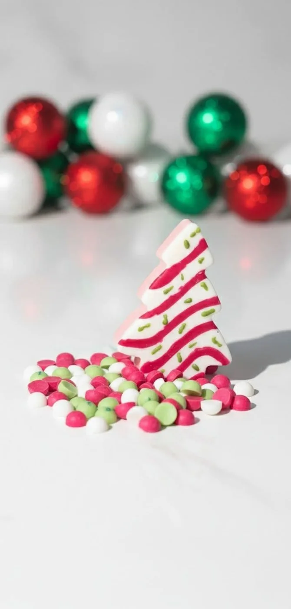
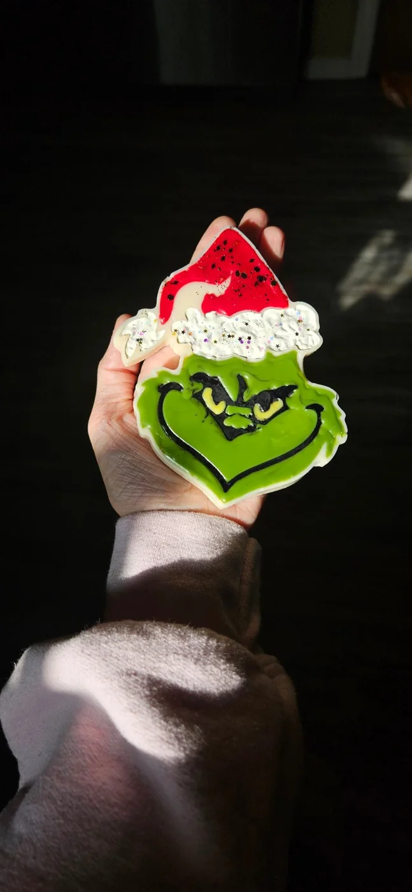

Wax melts · Candles · Potions
Handcrafted home fragrance from two sisters in Oklahoma. After a quiet season we're back, and now on the shelves of two local boutiques.
Browse the spells
Coven, our signature scent“Hello, witches. We handcraft enchanting wax melts, candles & potions. Come conjure with us.”
The sistersSmall batches, poured by hand. Each scent is named for the feeling it leaves in a room.

i.
Room & linen spray. Mint, apple, peach, musk and moss.
$12
ii.
The Nutcracker in a melt. Black currant, clove and almond.
Wax melt
iii.
Melts to liquid gold shimmer. Gingerbread, gooey caramel, creamy vanilla.
Wax melt
iv.
Our ever-so-popular holiday favourite, back by demand.
Wax melt
v.
A mean one that smells amazing. Chestnut & birch.
Test batchvi.
The scent we introduced ourselves with. Melt and potion.
SignatureThe sisters
Every melt, candle and spray is poured by hand in small batches, so scents come and go with the seasons. New ones get tested on us first. If a test batch earns its place, it joins the shop.
Where to find usThree steps to a room that smells like a spell.
One or two cubes from the clamshell into your warmer.
Watch the wax turn to liquid as the scent fills the room.
When the scent fades, pop out the wax and choose your next spell.
#ShopLocalOK
Or shop online any time. New moon, new scents.
Shop the spells